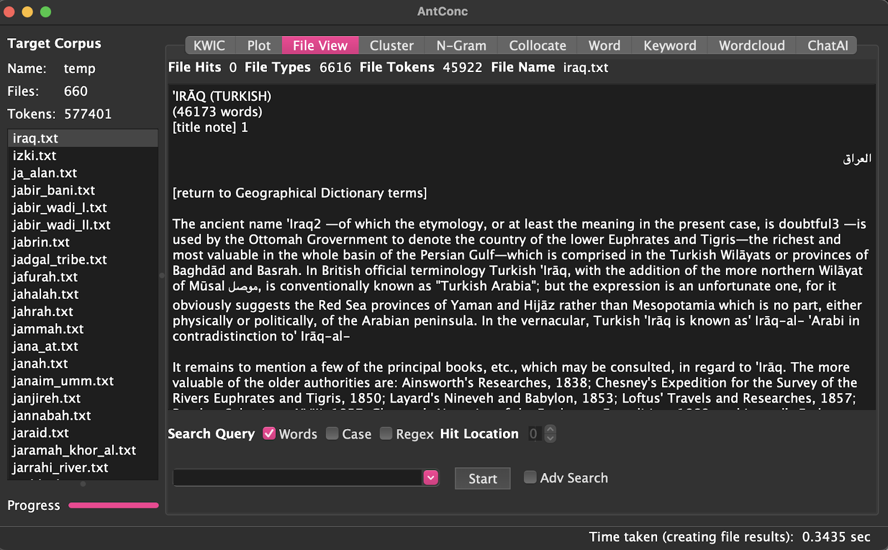
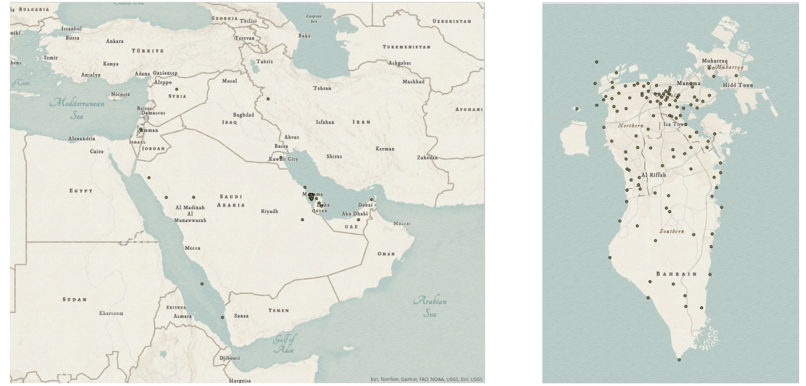
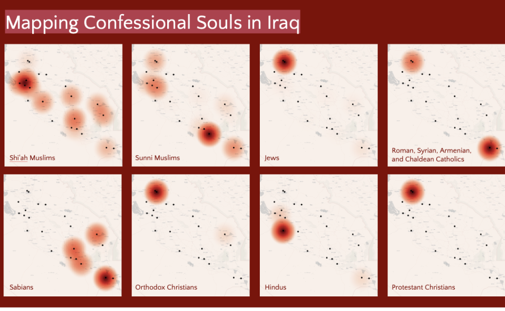
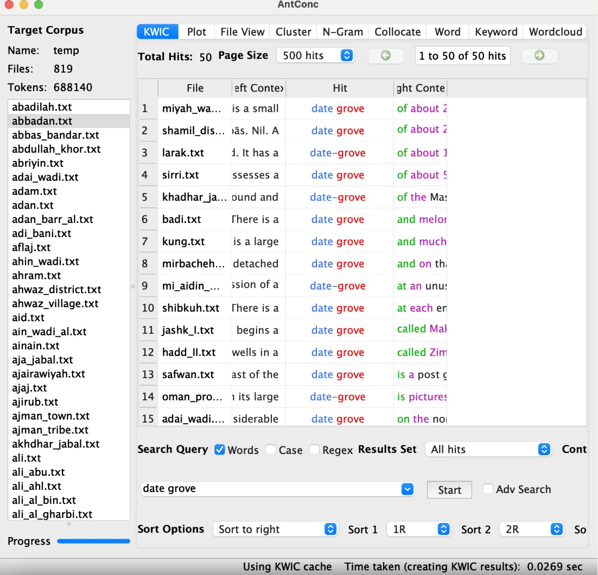
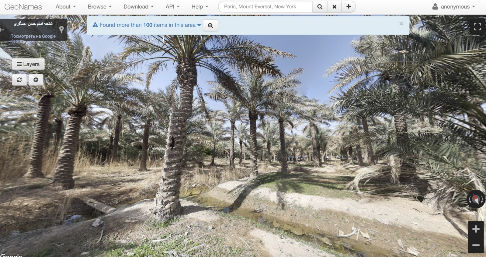
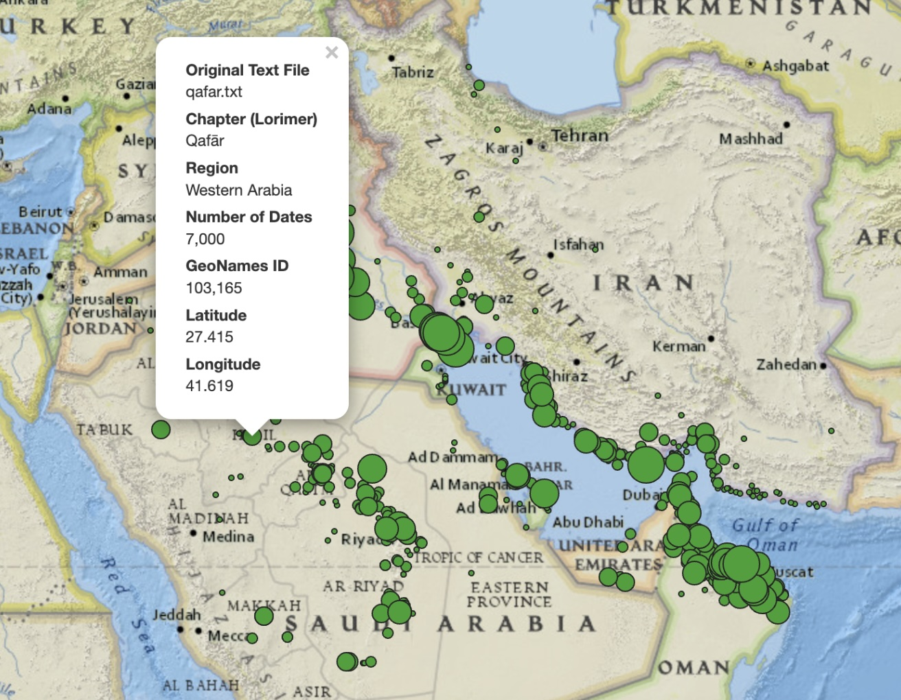

Summer 2024
Open Gulf
OpenGulf is a transdisciplinary, multi-institutional research initiative that undertakes various digital historical projects focused on the Gulf region. Within OpenGulf, the Historical Texts Analysis project specifically examines how different imperial powers, such as the Ottoman and British empires, conceptualized and constructed landscapes, human communities, and commodities in the Gulf. Since its inception, OpenGulf has aimed to broaden and diversify the scope of modern Gulf studies by bringing the voices of the region’s historical residents to the forefront of academic discourse.
Project Members
Project Member
Designation
ORCID
Data Disambiguation and Mapping of Gulf Spaces and Religious Communities
My involvement in OpenGulf revolves around analyzing and researching the Gazetteer of the Persian Gulf, Oman, and Central Arabia, compiled by John Gordon Lorimer, a British colonial administrator. This summer, one of my primary tasks was to verify the accuracy of our existing Lorimer geographic dataset. To accurately analyze and map the historical regions documented in the Gazetteer, I utilized AntConc, a freeware toolkit for text analysis, to scan the text files, identify key locations, and ensure that the descriptions aligned with our existing dataset.

Following the textual analysis, I assigned each identified region, city, or area a unique Geographical ID using GeoNames, a global geographical database containing over eleven million place names. After accumulating the GeoNames IDs, I employed OpenRefine, a powerful open-source tool for managing unstructured data, to submit URLs to web-based Geocoding APIs. This process augmented our dataset with precise latitude and longitude coordinates. Finally, using the extracted coordinate data, I created a detailed map of the identified locations within the Bahrain region of our dataset, utilizing ArcGIS Online or Pro.

Throughout the summer, my work within OpenGulf primarily focused on data manipulation, mapping Gulf spaces, and conducting textual analysis of imperial records using ArcGIS and QGIS. One of my key contributions has been the creation of a series of heat concentration maps based on data extracted from the Gazetteer and its appendix, with a particular emphasis on Iraq due to the granularity of the data available for this region. These maps illustrate the intensity of mentions of religious communities within specific areas, highlighting Baghdad as a central hub of administration and trade, the prominence of Basra as a port connecting Iraq to global markets, and the significance of the southern regions for agriculture, particularly in the cultivation of date palms. Additionally, the dispersal of smaller heat spots reflects the presence of numerous smaller communities that were integral to local economies or served as strategic routes during this period.

Mapping Gulf Spaces: 10 million British-documented Date Palms in the Persian Gulf
The textual heritage of the Arabian Peninsula is a rich tapestry of historical, geographical, and cultural narratives that span centuries. In our project, we aimed to create a comprehensive map of 10 million British-documented date palms across the Persian Gulf. Our approach involved several meticulous steps to ensure the map’s accuracy and informativeness.

First, we used AntConc to analyze Lorimer’s geographical texts and extract references to date palms. This involved sifting through large volumes of text to identify mentions of “date,” “date palms,” and “date groves” in various locations. By focusing on these keywords, we pinpointed where Lorimer discussed these plants, which was crucial for our mapping project. Once the process was complete, we cleaned and organized the data in Google Sheets. This process included recording each reference, adding relevant quotes, and linking them to their specific GeoNames IDs. GeoNames IDs were essential for providing precise location information, which allowed us to accurately place the data on the map. We also used OpenRefine to gather additional location details such as longitude and latitude. This step ensured that every date palm reference was correctly positioned on the map. With these coordinates, we moved on to the final mapping phase in QGIS. We created an interactive map that allows users to click on specific locations to view detailed information. When a location is selected, the map displays the location’s name, the relevant chapter from Lorimer’s work, and its exact latitude and longitude. This interactive feature enhances the map’s utility and provides valuable context to the historical data.

The depth and detail of our project were crucial for several reasons. By ensuring each reference was accurately annotated and geolocated, the map serves as a reliable tool for researchers and historians interested in the historical distribution of date palms. The interactive nature of the map allows users to explore the data dynamically, making it a valuable resource for studying the region’s agricultural history. This meticulous approach not only makes the map informative but also a significant contribution to the field of historical geography studies.
